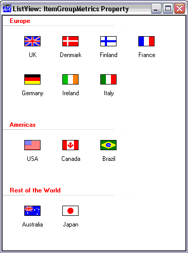

| Applies To: | ListView |
Description
This property is used to specify colours and spacing elements for a ListView that is displaying its Items in groupings (see ItemGroups).
Note that this feature only applies if Native Look and Feel is enabled.
ItemGroupMetrics is a 3-item nested vector as follows:
| [1] | Text Colours | 2-element vector of 3 element RGB values that specifies the colour of the group caption and group footer respectively. |
| [2] | Spacing | 4-element integer vector that specifies the top, left, bottom and right spacing around each grouping in pixels |
| [3] | Border | Colours4-element vector of 3 element RGB values that specifies the colours for the top, left, bottom and right borders (not yet implemented). |
The following expression, coupled with the code shown in the SetGroups example, causes the items to be displayed as shown below.
F.L.ItemGroupMetrics[1 2]←(2⍴⊂255 0 0)(10 100 0 10)
